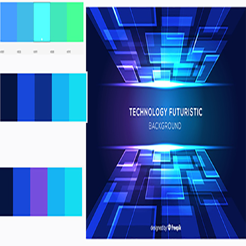
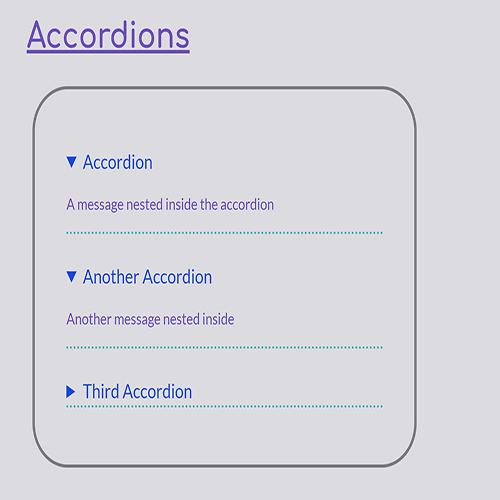
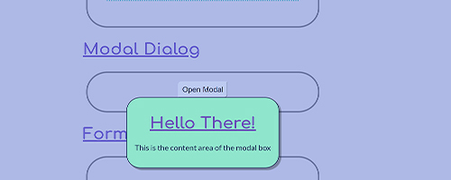
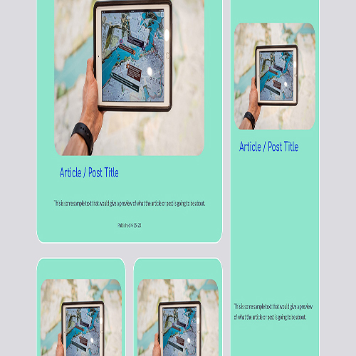

Building a Design Website
If you'd like to view the finished website, check out Foresight Design Website and the client website Beyond Vision
In Responsive Design 2, we learned how to build components with just HTML and CSS by building a design website. I had no idea what a design website was when I started the project. It was hard to wrap my mind around it at first, I had to keep it in mind that the design website is a blueprint for the actual website. By building it as we went, I learned there's a lot of amazing things you can do with HTML and CSS that I was never aware of.
How I started
The first place I started was trying to decide on a color palette. This was a lot harder than I thought and I changed color groups at least three times. I noticed a lot of tech websites used darker colors and I really wanted mine to stand out while not deviating too far from view people expect from AR/VR websites. I started with a purple base, but I was afraid it might not appeal to all demographics. These color swatches were based off the image and ultimately the inspiration for the rest of the design.
Accordion
I thought for sure that learning accordions were going to be super difficult and I was intimidated to learn them. But they ended up being fairly simple and honestly my favorite feature to build. I like how customizable they are especially when it comes to the changing the default drop down arrows.
Modal
Learning how to design modals was interesting to me. I'm not very fluent in javascript at all and luckily that wasn't a requirement for this class. However the modal requires a tiny bit of it in order to work. It was something that was given to us as part of the assignment thankfully. I really enjoyed coding animation into the pop up since animation is a throwback for me. This inspired me to try to learn javascript in my spare time. I'm not very good yet, but it's very interesting.
Grid
With all the new skills I learned in coding components, we learned some neat things about layouts using HTML and CSS as well. I thought flex was fun and easy to work with, but grid is so flexable! It's kind of like using clay to mold webl layouts. Here's a sample of my grid layout for articles.